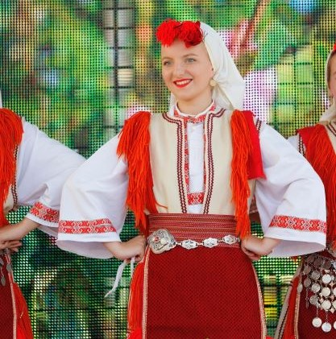
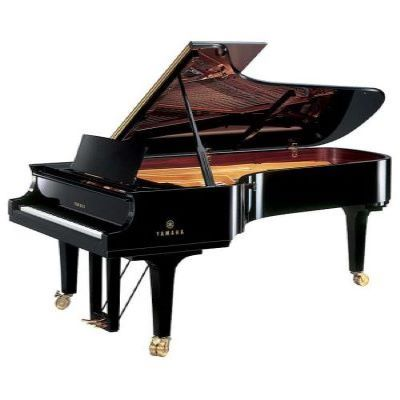

Мое омилено хоби е играорна. Од 5 години сум член во фолколорно друштво и благодарение на играорната сум посетила и настапила на многу концерти во нашата држава, но и надвор од неа.
Едно од моите хобија исто така е и свирење на пијано и имам завршено нижо музичко училиште во „Ристо Јуруков“ во Кочани. Иако поради обврски не се посветувам доволно на тоа, сепак слободното време го користам да научам некоја нова композиција.
Ако ги прашате моите пријатели како би ме опишале со еден збор сигурно би рекле КНИГОХОЛИЧАРКА. Јас сум опседната со книги, особено со трилери и мистерии. Читањето книги ми причинува најголемо задоволоство и со нетпрение очекувам да излезат нови книги кои едвај чекам да ги држам во рака.